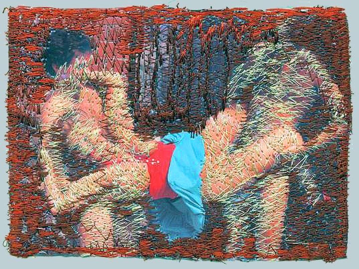
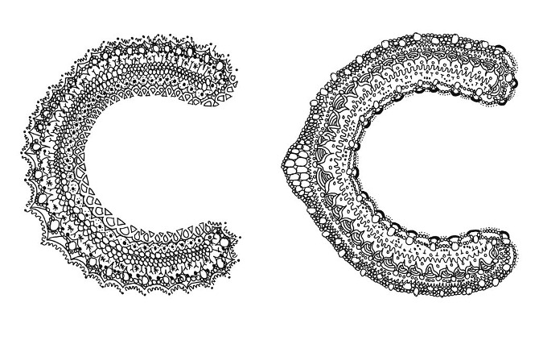

Experimenteren met oude gewoontes
Wat is de toekomst van het ambacht?
ONDERZOEKSVRAAG
Hoe heeft het ambacht zich geëvolueerd door de jaren heen en hoe zal dat in de toekomst zijn?
INLEIDING
Als ik mijn werk moet gaan omschrijven komt het handgemaakte vaak naar voren. Ik hou er van om een complex idee uit te werken in iets fysieks, iets wat ik met mijn handen heb gemaakt, iets wat je kunt aanraken en het genieten van de foutjes die het werk onverwacht beter kunnen maken. Ik krijg al hoofdpijn als ik ook maar aan coderen denk, je kunt dus wel stellen dat ik ambachtelijk werk. Ondanks de hoofdpijn, vind ik de moderne technische mogelijkheden toch erg interessant. Ik merk dat er iets ontzettend moois uit kan komen en ooit komt er een dag dat ik mij daarin ga verdiepen, het is bovendien de toekomst, of toch niet?
Als grafisch ontwerper die graag met haar handen werkt, vraag ik me af wat ambacht nou precies is. Met ambacht bedoel ik niet de ‘geiten wollen sokken’ breisels van je tante, maar het ambacht op een hoogstaand en geschoold level.
Producten en kunstwerken waren 200 jaar geleden al snel “knap” gemaakt. Logisch, want er waren toen nog geen machines, alles moest dus met de hand worden gedaan. Ambacht bestond toen nog niet. In deze scriptie ga ik onderzoeken wat voor invloed de technologische revolutie op het ambacht heeft en heeft gehad.
Is technologie zo fascinerend en boeiend in al zijn mogelijkheden dat het ons leidt naar de “verkeerde richting”?
Deze scriptie zal ook een aantal afbeeldingen bevatten waardoor ik mijn mening, onderzoek of vraag verduidelijk. Kunstwerken, ontwerpen en producten waar ik mijn inspiratie uit haal, die ik als goede voorbeelden zie hoe ik de ambacht van toen, nu en in de toekomst voor me zie.
AMBACHT WAS WAT HET WAS
1.1 Toen ambacht nog “gewoon” was
Ambacht was vanaf de Middeleeuwen voor de burgers en had een economische rol. Je had toen geen ambachtslieden zoals we die nu kennen, maar men was lid van een gilde.Een gilde was een belangenorganisatie van mannen met hetzelfde beroep. Hierin werd ervaring en kennis uitgewisseld, niet in de vorm van kunst maar als dienaar om zo hun stad in goede conditie te houden. De regels van het ambachtelijke gilde, door heel Europa, bestonden uit twee standaarden; het exclusieve recht van de leden om bepaalde specifieke producten te produceren en de mogelijkheid voor het trainen van nieuwe ambachtslieden. Een groot nadeel van de gilden was dat het ambacht binnen in de gilde niet vernieuwd of veranderd mocht worden. Deed je dit wel, werd je verbannen en moest je een ander beroep zoeken.
Gelukkig had het lid zijn van een gilde ook zijn voordelen. Iemand die lid was, was verzekerd van sociale zekerheid en werd ondersteund als hij bijvoorbeeld ziek werd. Naast dat de gilden grote invloed hadden op de economie zijn er verschillende visies over hoe zij effect hebben gehad op het leven nu. Onbetwist is het positieve effect van de strenge controle van gilden op de kwaliteit van producten. Maar voor sommige economen en historici was dit een negatieve bijdrage. Gilden waren over het algemeen zeer conservatief en van vernieuwingen moesten ze niets weten. Hierdoor werd de modernisering in Europa sterk vertraagd. 1
Je kunt dus stellen dat het ambacht rond deze tijd niet veel met kunst te maken had, maar stond voor bijvoorbeeld stratenmaker of een schoorsteenbouwer. Je zou kunnen zeggen dat leden die uit de gilden werden gezet, meer trekjes hadden voor het maken van kunst. Zij waren immers degene die wilden experimenteren en zich niet wilden houden aan de standaarden en regels van een gilde.
Het afschaffen van de gilden, in 1818, werd als een van de belangrijkste redenen genoemd van de sociale kwestie 2 in de negentiende eeuw die weer het gevolg was van de industriële revolutie.
1.2 De industriële revolutie
De reden van de industriële revolutie was de sterke bevolkingsgroei vanaf de 18e eeuw.Door deze groei ontstond er een enorm aanbod aan arbeidskrachten. Ook waren er nieuwe en efficiëntere productiemethodes nodig voor de verzorging van vele mensen. Stoommachines, machinale weefgetouwen, textielfabrieken en ijzerfabrieken schoten als paddenstoelen uit de grond. Arbeidsdorpen werden al snel steden door de enorme toestroming van arbeidskrachten. Maar door deze toestroom waren de arbeidsomstandigheden slecht, de nieuwe arbeiders moesten hun tijd doorbrengen in vochtige kelders en de zogenoemde arbeidskazernes. Niet alleen mannen, maar ook vrouwen en hun kinderen moesten onder slechte omstandigheden werken en leven. Er was een constante dreiging van werkloosheid en honger. Vaak kwamen de arbeiders in opstand en probeerden tevergeefs de industriële revolutie tegen te houden.
De industriële revolutie was het begin van het onderscheid tussen ambacht en massaproductie.
1.2.1 De Industriële revolutie met betrekking tot het ambacht in kunst
Naast het feit dat de arbeidsomstandigheden zo slecht waren en het ambacht niet meer nodig was, werden mensen, vooral kunstenaars, kritisch over de voordelen van het ambacht. Wat er gebeurde was dat er een pro-ambacht beweging tot stand kwam en rond 1900 bereikte deze zijn eerste hoogtepunt. Zij waren van mening dat de massaproductie voor mindere kwaliteit zorgde in vergelijking met wat er met de hand gemaakt kon worden. Terwijl er voor miljoenen mensen betaalbare producten beschikbaar kwamen, die voortkwamen uit machines, begon de Arts & Crafts beweging. 3Deze beweging bestond onder anderen uit de Engelse William Morris (1834), de in Engeland geboren John Ruskin (1819) en de Amerikaanse Frank Lloyd Wright (1876), die als protest handgemaakte kunstvoorwerpen kochten en maakten. De leden van de Arts & Crafts beweging waren visionairs van een leven dat verrijkt was met kwalitatieve, ambachtelijke producten en waren voorstanders voor een beter productieproces en leefklimaat. Hun visie was dat producten niet gemaakt moesten zijn door de dictatorschap van machines die gebaseerd zijn op protocollen, regels, en bestaande modellen, maar zij waren van mening dat ze bijdroegen aan een verziekte atmosfeer in de stadsomgeving. Ze wilden een wereld bestaande uit mooie en vooral nuttige kunst, kunst dat voortkwam uit kunst en arbeid. 4
Een voorbeeld van een product gemaakt door William Morris, een van de leden uit de Arts & Crafts beweging is de ‘De Morris Stoel’. Deze stoel definieert voor mij de mooie, nuttige en simpele gedachten gang van de Arts & Crafts beweging.

Minder simpel en nuttig is de cover voor het boek The Story Of The Glittering Plain uit 1891. Waarom ik voor dit werk heb gekozen is dat dit, door het detail, voor mij het toppunt van handwerk is.
1.3 Het ambacht was gered, maar waarom moeten we hem nu nog behouden?
De Nederlandse Arjo Klamer (1953), hoogleraar culturele economie aan de Erasmus Universiteit in Rotterdam, heeft zich samen met een groep onderzoekers verdiept in de Nederlandse ambachts-economie en die daarbuiten. Ze kwamen tot de conclusie dat Nederland achter loopt in vergelijking met Duitsland met haar ‘maak-cultuur’ en Engeland die het creatief vakmanschap koestert.Vooral Japan heeft een levendige ambachtscultuur, want daar is ambacht een nationale trots. Iemand die een ambacht ‘meestert’ is een persoon met groot aanzien. 5 Toch is er in Nederland iets aan het veranderen. Politici spreken over het belang van vakmanschap en steeds meer instellingen, zoals de VIE, 6 zetten zich in om deze te behouden. 7
Onze belangstelling voor ambachtelijke producten groeit nu al meer dan tien jaar, zelfs de overheid bemoeit zich er nu mee.
De reden waarom de overheid het ambacht wil stimuleren, is de voorzichtige omkeer van de maakindustrie in Nederland. Wat nu vooral terugkeert is een meer gespecialiseerde, ambachtelijke en kleine creatieve maakindustrie. Het probleem is wel dat de hiervoor benodigde vakmensen ontbreken en daarom moet het vakonderwijs worden gestimuleerd. 8
“Het ambacht moet het respect en de waardering van weleer terugkrijgen. Ambacht moet weer hip en modern gevonden worden.”9 Er zijn steeds meer kunstenaars die interesse tonen in het ambacht, zowel schilders als ontwerpers. Langzamerhand zal duidelijk worden dat goed ambachtsschap niet alleen essentieel is voor een kwalitatief hoogstaande samenleving maar ook voor de economie.
1.4 De waarde van het ambacht
“We zien een interessante dynamiek: duizenden jaren geleden schreven ze op stenen die duizenden jaren bleven bestaan. Honderden jaren geleden in boeken die honderden jaren blijven bestaan. En tien, twintig jaar geleden schreven ze dingen in computermedia die er nu al niet meer zijn. Veel kleitabletten zijn er niet meer. We weten niet wat we niet hebben gezien, en er is veel beschreven papyrus verloren gegaan en de bibliotheek van Alexandrie 10 is meermalen afgebrand. Veel dingen daarvan krijgen we nooit meer terug. Er gaan altijd dingen verloren. Het interessante van de huidige technologie is dat we zeker weten dat het verloren gaat.”11
In de Tegenlicht uitzending ‘Digitaal Geheugenverlies’, 12 stelt Alexander Rose (19..) , directeur van de Long Now Foundation 13, aan de kaak dat er een aantal duidelijke voorbeelden zijn van het negeren van het verleden.
Een voorbeeld hiervan is dat na de tsunami in Japan stenen van honderden jaren oud met de inscriptie ‘Bouw geen huizen onder dit niveau’ waren gevonden. Uiteraard is daar wel gebouwd. Dit is volgens Alexander Rose pure arrogantie van de moderne technologie omdat ze dachten dat de huidige dijken sterk genoeg waren. Hierin zie je dat een oude techniek met de toekomst probeerde te communiceren maar compleet werd genegeerd.
In Richmond, Californië staat een enorme loods waar ze per maand tussen de 100.000 en 250.000 boeken binnenkrijgen die ze opslaan om ze te digitaliseren, door middel van ze in te scannen. Ze zorgen ervoor dat de boeken digitaal levensvatbaar blijven. Dat houdt in dat ze boeken vanuit technisch oogpunt verbeteren naarmate standaarden veranderen. Ze mogen niet verouderd raken en mogen niet verdwijnen omdat de digitale techniek verandert.
Twee voorbeelden van het ambacht die absoluut niet verloren mogen gaan omdat ze zoveel vertellen over de geschiedenis en door de technologie van nu zelf historische objecten zijn geworden.
1.5 Maar wat is ambacht nu?
De Amerikaanse Richard Sennett (1943), schrijver van het boek The Craftman 14, zegt dat vakmensen als timmerlieden en laboranten hun werk met overgave voltooien en altijd goed willen doen voor hun eigen bestwil.Dus is echte ambacht je trots voelen over het werk wat jij hebt gemaakt? Maakt het niet meer uit of het gemaakt is met de handen of iets wat voortkomt uit de computer?
Sennett is van mening dat de voldoening van het fysiek maken van een product onderdeel is van het mens-zijn. Het is nodig om met vaste, bestaande materialen te werken om op deze manier geworteld te blijven in de materiële werkelijkheid en zo een evenwicht te creëren in een wereld waarin mentale voorzieningen worden overschat. Hij neemt een blik terug naar de percepties van de 18e eeuw, naar de Verlichting, een intellectuele stroming in Europa. Een beweging voor intellectuelen, met het doel om de wetenschap en het intellectuele, gebaseerd op alleen maar feiten, uit te wisselen. Dit was tevens het begin van de industriële revolutie. In zijn boek omschrijft hij dat ambachtelijke vaklieden het leveren van goed werk zien als een bron van het menselijk geluk. Hij zegt dat magische menselijke momenten, zoals het maken van fouten, niet na te maken zijn door een machine. Sennett maakt zich sterk voor de verloren ruimte van vrijheid. Dit zijn ruimten waarin ambachtslieden kunnen experimenteren met ideeën en technieken. Het maken van fouten is volgens hem een aandoening waarvoor mensen zullen moeten vechten in de moderne samenleving. 14
EIGENTIJDS AMBACHT, DE TWEEDE INDUSTRIËLE REVOLUTIE
2.1 Ambacht is in
Overal om me heen zie ik dat het ambacht steeds populairder wordt.Niet alleen zie je steeds vaker zelfgemaakte sjaals, glas en meubels, maar ook zie je dat bedrijven die handgemaakte producten leveren als paddestoelen uit de grond schieten.
Voedsel is ook geen uitzondering. Drie jaar geleden begon ik te werken bij de Marqt, een supermarkt met “echt” eten. Nu drie jaar later, zijn er tientallen vestigingen bijgekomen. Het is duidelijk, het ambacht is hip.
Deze toegenomen aandacht voor ambacht wordt veroorzaakt door een aantal trends, onder andere door de globalisering. Tegenwoordig kunnen we overal ter wereld dezelfde hamburger eten, bijvoorbeeld die van de McDonald’s, waardoor we juist de zelfgemaakte gehaktbal van onze oma herwaarderen. Ook is er een grote afstand van de natuur ontstaan. Dit komt voornamelijk door de massaproductie, de digitalisering en de verandering van het mediagebruik. We weten vaak niet meer wat echt is en wat niet. Daarom willen we weer terug naar het natuurlijke ‘echte’ product. De confrontatie met andere culturen leidt vaak tot angst en onwetendheid waardoor we het traditionele lokale leven veel meer waarderen dan voorheen. Ook heeft de economische crisis zijn sporen achter gelaten waardoor we verlangen naar een simpeler vroeger. 15
Door deze gebeurtenissen zijn we weer met beide benen op de grond gaan staan en zoeken we bevestiging in kleinschaligheid, verbondenheid en eenvoud. Handgemaakt is eerlijk, kleinschalig, uniek en daarom menselijk.
Natuurlijk is het logisch dat deze vorm van ambacht op dit moment populair is, je ziet het overal, iedereen is er mee bezig.
Overal op internet, televisie en in de kranten zie je programma’s en artikelen verschijnen die dit onderwerp op hun eigen eigentijdse manier aankaarten. Het ambacht is in.
2.2 Ambacht en kunst
Waarom begeren we het handgemaakte product weer? Stralen ze een soort van originaliteit uit, laten ze zien dat je, als je dit product bezit, anders bent dan de rest? Of is het simpelweg duurzamer?Volgens Cornel Bierens (1949), een Nederlandse kunstenaar en schrijver, wordt de eenentwintigste eeuw een gouden tijd voor het ambachtelijkheid omdat de conceptuele en theoretische kunst zijn langste tijd heeft gehad. Kunst zal niet meer zo afhankelijk zijn van het daarbij vertelde verhaal of filosofie. De uitbreiding en de technologieën van de camera en computer, hebben volgens Bierens niet geleid tot de langzame dood van oude media als verf en het doek.
Bierens refereert naar de opkomst van borduren en pottenbakken. Hij zegt dat deze terugkerende interesse voor oude technieken samen gaat met de omarming van nieuwe middelen als de 3D-printer. Hierdoor is het mogelijk om vrijwel alles zelf te maken. Met dank aan de financiële crisis lijkt de massa-industrie af te nemen. Kleinschalige productie is nu aan de orde. 16 Kunstenaars en ontwerpers kijken weer naar de geschiedenis van het ambacht, naar hun identiteit. Dit houdt in dat ze veel onderzoek doen naar regionale wortels en de ambachtelijke technieken die hierbij horen. Klakkeloos deze technieken overnemen is hierbij niet meer aan de orde. Het gaat nu vooral om het experimenteren met oude materialen en het herontdekken van oude technieken. Als kunstenaar of ontwerper ben je altijd opzoek naar wat nieuw en uniek is.
Door ons verlangen naar vroeger, de echtheid en originaliteit, willen we weten waar producten vandaan komen en hoe ze zijn gemaakt. Helaas is dit echter alleen toepasselijk voor een kleine groep mensen, wat volgens mij tegenstrijdig is omdat het ambacht producten vertegenwoordigen die voor iedereen toegankelijk moeten kunnen zijn. Wat je nu vooral ziet is dat handgemaakte producten juist heel erg duur zijn.
2.2.1 Commentaar leveren
Grayson Perry
In het begin van deze zogeheten ‘ambachtelijke revolutie’ werd het ambacht vooral gebruikt om commentaar te geven.Een voorbeeld hiervan is het werk van de Engelse kunstenaar Grayson Perry (1960).
Perry staat bekend om zijn sterk autobiografische elementen in zijn werk en het gebruik van zijn alter ego “Claire”.
Één van zijn bekende werken zijn zijn vazen. Deze vazen hebben de typische ambachtelijke klassieke vorm, maar met daarop schilderingen die de keerzijde van deze burgerlijke stijve uitstraling weergeven. 17 Een werk wat voor mij goed uitbeeldt om op een speelse manier de twee werelden van de ambacht en het leven van nu te verbeelden.

Berend Strik
Ook Berend Strik (1960), een Nederlandse beeldende kunstenaar, geeft op dezelfde ambachtelijke manier commentaar. Strik is het bekendst om zijn, in de jaren 90 hervonden, geborduurde werken. Voor een mannelijke kunstenaar is borduren een interessante keuze. Hij past deze techniek toe op vooral gevonden materialen; foto’s uit familiealbums, zelfgemaakte foto’s en afbeeldingen uit tijdschriften. Passend bij de uitspraak van Cornel Bierens, dat ambachtelijk werk van nu geen inhoud heeft en niet conceptueel is, heeft Strik deze techniek gekozen omdat het geen handschrift laat zien. 18In zijn werk ‘Blue’ combineert hij porno met de dodelijk truttige associatie van het borduren. Overigens borduurt hij niet zelf, maar laat hij dat doen. Veel van zijn werken zijn in Hongarije gemaakt, het geboorteland van zijn vader.
Wat ik mij nu afvraag is, of het ook ambacht is wanneer je het ambachtelijke werk uit laat voeren door een ander. Gaat het dus alleen maar om het idee?
Ik vind ‘Blue’ een interessant voorbeeld omdat Porno, voor veel mensen, een beschamend onderwerp is. Door het werken met borduren krijgt het een liefelijk uitstraling. Op deze manier heeft Strik deze foto voor veel meer mensen toegankelijker gemaakt.

2.2.2 Mooie ambacht
Hella Jongerius
Commentaar leveren hoeft tegenwoordig niet meer. Ontwerp mag weer alleen mooi zijn.Voor de Nederlandse industrieel ontwerper Hella Jongerius (1963) is kunst te vrij en houdt ze van de grenzen die centraal staan in het ontwerpen. Waarom ze in het rijtje staat van ambachtelijke ontwerpers? Dat is onder andere omdat ze het liefst werkt met haar handen. Haar schetsen maakt ze zelden op de computer. Jongeruis’s visie is dat het werk wat voortkomt uit haar handen veel “slimmer” is dan wat er voortkomt uit haar hoofd. De foutjes die je maakt tijdens het maken van proefmodellen vindt zij veel interessanter dan het schetsen op de computer waarbij alles al snel perfect is. Volgens Hella Jongerius maakt de kracht van het onverwachte, ongelukjes, detail die nooit hetzelfde zullen zijn en de fouten die je maakt, het ambacht. 19 Bij eerste oogopslag zien de vazen van Hella Jongerius eruit alsof ze tot in de puntjes ontworpen zijn. Maar van dichtbij zie je duidelijk het tape zitten, waardoor elke vaas anders is.
Veel werkplaatsen, zoals het Europees Keramisch Werk Centrum in Den Bosch en het Textielmuseum in Tilburg, merken op dat er een flinke toename is van niet-ambachtelijke opgeleide kunstenaars die vooral komen uit de mode, architectuur, schilderkunst en autonome sector. Deze hedendaagse kunstenaars willen niet meer terug naar het ambacht omdat de technische beheersing niet meer nodig is, zoals bij de traditionele kunstenaars, maar zij zien het meer als een versterking voor het artistieke eindresultaat. 20
2.2.3 Oude gewoontes
De nieuwste trend onder ontwerpers is om oude gewoontes om te zetten naar nieuwe ambachtelijke technieken. Het gaat hierbij niet om wát de ontwerper maakt maar om hóe hij het maakt. Het conceptuele aspect van ontwerpen wordt vervangen door het onderzoeken naar nieuwe grondstoffen en het experimenten met oude technieken en ambachtelijke materialen.Lex Pott
De jonge Nederlandse ontwerper Lex Pott (1985) gebruikt dit experimenteren met oude ambachtelijke technieken in zijn werk en komt voort uit de oorsprong van materialen als hout, steen en metaal. Voor één van zijn projecten, genaamd ‘Diptych’, gebruikt hij het natuurlijke, ambachtelijk product hout en combineert dit met de zandstraal techniek.Doordat bepaalde jaarringen van het hout lichter en poreuzer zijn en daarnaast ook verschillen in hardheid, worden deze weggeblazen door de zandstraalmachine. 21 De harde jaarringen blijven bestaan waardoor er bij elk stuk hout een ander patroon ontstaat.
De hoeveelheid van de harde en zachte jaarringen beslissen het uiterlijk van het werk. Iets ontstaat dus per toeval. Dit is ook hetgeen dat mij aanspreekt aan dit werk. Nooit echt weten hoe het werk eruit gaat zien vind ik erg spannend.

Mieke Meijer
De Nederlandse ontwerpster Mieke Meijer (1982) heeft een passie voor materiaal en detail. Dit is terug te vinden in het, door haar gemaakte, industriële autonome werk ‘Materialism’. Tijdens het maken van dit werk stond het onderzoeken naar industriële materialen zoals metaal en glas centraal. Ze heeft onderzocht hoe deze materialen er uitzien wanneer ze met de hand worden gemaakt en hoe deze materialen veranderen wanneer ze op een andere, experimentele en vooral ambachtelijke manier worden behandeld. 22De toeval die in dit werk naar buiten komt spreekt mij erg aan. Elke keer is het een verrassing hoe een plaat er uit zal gaan zien waardoor elke constructie anders zal zijn.

Kehinde Wiley
De in New York gevestigde beeldende kunstenaar, Kehinde Wiley (1977), vervangt de blanke mensen uit heldhaftige, krachtige en majestueuze schilderijen uit onder anderen de Renaissance, door zwarte en bruine mensen. Zijn doel is om op deze manier de gediscrimineerde Amerikaanse donkere mensen alsnog een glorieus verleden te geven.Iemand levensecht naschilderen is voor mij een wonder en de manier waarop Wiley dit doet vind ik bijzonder, namelijk mensen uit het dagelijkse leven omtoveren tot iets glorieus. Zijn schilderen zijn enorm groot waardoor het levensecht lijkt. Dit vind ik echt vakmanschap.

2.3 Ambacht en grafisch ontwerp
Hansje van Halem
Nederlandse grafisch vormgever en typograaf Hansje van Halem (1978) laat zich inspireren door traditionele kantklostechnieken. Op deze techniek heeft ze een lettertype gebaseerd genaamd de ‘Doily’. Deze letter is, net als bij het kantklossen, opgebouwd uit geografische en decoratieve figuren. Van Halem is erg geneigd om zeer gedetailleerde sierletters te ontwerpen die haar herinneren aan de sierlijke draden van kant. Het Doily alfabet heeft van Halem met de hand getekend. Het detailleren gaat zo ver dat ze voor elke letter meerdere versies heeft gemaakt, zodat nooit dezelfde ontworpen letter twee keer in één woord staat.Het detail en de foutjes die kunnen worden gemaakt, maar die soms wel een heel nieuw ontwerp maken, spreekt mij erg aan bij dit ontwerp. 
Karel martens
Nederlandse grafisch ontwerper Karel Martens (1939) gebruikt de media van nu als inspiratie bron voor zijn werk. Hij misbruikt deze media en creëert doormiddel van drukpers en/of zeefdrukken unieke ontwerpen. Wat opvallend is in zijn werk is dat hij vaak zijn ontwerpen drukt op gebruikt papier centraal staan voor de massaproductie. De formaten van het gevonden papier bepalen de uiteindelijke opdruk. Hierdoor is zijn werk nooit twee keer hetzelfde. 23Karel Martens is een grafisch ontwerper die niet kan ontbreken. De combinatie van zeefdrukken en gebruikte materialen kunnen al snel een ouderwetse uitstraling krijgen. In het geval van Martens is dit zeker niet het geval.

2.3.1 A23D
De drukpers is een van de oudste manieren van drukken en is een techniek waarbij gebruik wordt gemaakt van houten en loden letters. Bij deze techniek wordt niet alleen inkt overgebracht, maar ook een reliëf.Het feit dat er ongeveer een eeuw zit tussen de ontworpen letters van voor de 21 eeuw en die van nu is, volgens de Engelse grafisch ontwerper Richard Ardagh (1981), één van de redenen dat we niet meer geïnteresseerd zijn in dit medium. 24 Wat is dus de toekomst van de drukpers, hoe kunnen we het voor deze tijd weer relevant maken? Gelukkig is hier een oplossing voor bedacht.
Je kunt zeggen dat de drukpers aan het evolueren is. Dit omdat we niet alleen de beperkte standaard loden letters gebruiken, maar we kunnen nu ook zelf een eigen letter ontwerpen en deze door middel van de 3D-printer werkelijkheid zien worden. Door de komst van de 3D-printers zijn er veel meer mogelijkheden en nieuwe inzichten ontstaan in het gebruik van oude machines als de drukpers. Hierbij is het ambacht een combinatie van de nieuwste vorm van printen, namelijk; 3D-printen gecombineerd met de aller oudste, het printen met de drukpers. Het voordeel is hierbij dat we in principe elke zelf ontworpen letter kunnen gebruiken, maar dat we nog wel het gevoel hebben van ergens veel tijd in steken en van iets creëren met onze handen op een traditionele manier. 24
Ardagh heeft voor het project A23D samen met een ontwerpbureau, specialisten in het printen van 3D-objecten en de drukpers studio, zelf een drukpers-letter ontwerp gerealiseerd.
Omdat door de 3D-printer veel detail mogelijk is en om het feit dat een 3D-printer de letter heeft uitgeprint, is het een ontwerp met een erg gedetailleerd 3D-effect geworden, een moeilijk proces wat bijna twee jaar heeft geduurd. Hiermee hebben ze hopelijk een nieuwe toekomst gecreëerd voor de drukpers. Die toe te passen is op de wensen en bekwaamheden voor ontwerpers van vandaag de dag. 24
Waarom we de drukpers moeten behouden? Omdat je ziet hoe het is gemaakt, je kunt het reliëf voelen. Details voelen en zien die je niet krijgt door middel van alleen ontwerpen met de computer. De reden waarom ik dit ontwerp heb gekozen.

2.4 Toen Web 1.0 nog nieuw was
Web 1.0 is geweest en wordt nu gezien als een oude internet esthetiek. Een prima inspiratiebron voor jonge ontwerpers van nu. Is dit ook ambacht? Wat hier gebeurt is dat er inspiratie wordt gehaald uit de jaren negentig. Zoals de titel van mijn scriptie al zegt: Experimenteren met oude gewoontes. Hier zijn overdreven kleurrijke graphics, jaren negentig lettertypes en afbeeldingen van virtuele werelden aan de orde. 25Een voorbeeld is het werk van de Amerikaanse kunstenaar Jon Satrom (19..). Hij heeft een blog ontworpen, wat tevens zijn portfolio website is, in de stijl van het internet in de jaren negentig, toen het nog in zijn kinderschoenen stond. 26 Hierbij is duidelijk te zien, dat met de toen heel veel voorkomende bugs, vormgegeven en geëxperimenteerd is door middel van glitch art, wat op dit moment door van vele andere kunstenaars en (grafisch) ontwerpers veel aandacht krijgt.
2.5 Ideeën zijn groter dan ambacht
Één ding is duidelijk. Er is een nieuwe dynamiek ontstaan in de al lang bestaande vaste verhoudingen tussen vakmanschap en ontwerp, tussen individuele en industriële productie.Er is een toename in de vraag naar individualisering van producten en ontwerp. Dit speelt niet alleen in de ambachtelijke sector, maar heeft ook invloed op de “high-tech” sector. Hierbij is grootschalige productie, net als bij het ambacht, niet de norm.
De invloed van de traditionele technische kennis groeit alleen maar meer en meer. We kunnen op dit moment veel meer met de technieken, waardoor het ambacht ook is veranderd. 27 Een voorbeeld is een tapijt gemaakt van hout maar met de textuur van textiele weefstructuren. Dit is onmogelijk om met de hand te maken. De makers van dit product zijn hierin wél in geslaagd. Dit door middel van allerlei softwarepakketten, 3D- en textielontwerp.
Een interessant ontwerp voor mij omdat het het oudbollige van een tapijt weergeeft maar de manier waarop het gemaakt is is modern. Dit vind ik een interessante combinatie en een goed voorbeeld van hoe de ambacht op dit moment kan worden gedefinieerd.

Ik vraag me af of het ambacht van nu, met de hand dingen maken en soms met behulp van moderne machines, niet langzaam evolueert naar alleen werken met machines, omdat die het op een gegeven moment beter kunnen dan werken met de hand. Wat heeft dat voor invloed op de waarde van het ambachtelijk product of ontwerp? Is het dan nog wel ambachtelijk?
In het boek ‘Printing Things. Visions and Essentials for 3D printing’ 28, wordt in kaart gebracht dat ontwerpers niet langer uitwerkers zijn van het ontwerp, maar alleen het idee voorzien. De consument is op dit moment in staat om het ontwerp zelf uit te printen.
Is technologie zo fascinerend en boeiend in al zijn mogelijkheden dat het ons leidt naar de verkeerde richting? Er gaat iets essentieels verloren als je niet kunt voelen of ervaren wat je bij een handgemaakt product wel kunt. Mijn vraag is of de computer deze gevoelens kan vervangen.
Het is duidelijke dat de (grafisch) ontwerpers beïnvloed worden door de technologische vooruitgang. Ze raken er door geïnspireerd en willen zich daarin verdiepen en verder ontwikkelen. Ik wil me gaan verdiepen in verschillende technologische programma’s en machines en wil gaan onderzoeken wat voor invloed deze kunnen hebben op het ambacht zoals we die nu kennen. Is er een samenwerking nodig voor de kunstenaars en ontwerpers die wel willen werken met de technologie van nu maar niet weten hoe? Verandert het ambacht door deze technologieën of heeft het helemaal niets met elkaar te maken?
COMPUTER GEMAAKTE AMBACHT
3.1 Hoe worden wij beïnvloed door de technologie?
“Onze kinderen lopen het risico om ‘schermzombies’ te worden. Met die forse claim komt de Belgische neuropsychiater en bedrijfsconsultant Theo Compernolle (1946). Hij ziet dat in een groeiend aantal gezinnen tablets en Ipads als een verkapte babysitter gebruikt worden ‘omdat de kleintjes er zo lekker rustig van worden’. Maar daardoor missen ze een deel van hun ontwikkeling dat ze nooit meer in kunnen halen.”29

3.2 Generatie Y
De generatie Y, geboren in de late jaren tachtig, is altijd online. Zij is liefhebber van de voortdurende afleiding en het overspringen tussen werk en sociale media. Ze is er vaak van overtuigd dat ze goed zijn in multitasking en dat het geen negatieve uitwerking heeft op haar prestaties. Onderzoek toont aan dat de babyboomers (geboren tussen 1945 en 1955) en generatie X (geboren tussen 1961 en 1980), zich herinneren dat ze veel efficiënter waren voordat ze online gingen. Veel jongeren die aan het arbeidsproces beginnen hebben nooit ervaren hoe het is om met een aanhoudende en ongestoorde gerichte aandacht te werk te gaan. Zij zijn van mening dat deze ongestoorde aandacht verveling kan opbrengen. Ze willen juist afgeleid worden. 30Doordat de technologie zo in ons leven verweven is, worden we hierdoor bijvoorbeeld ook anders opgeleid. Onze kinderen krijgen nu les door middel van tablets en computers. Ik vraag me af of dit invloed heeft op hoe wij, de ontwerpers, in de toekomst vormgeven, en ook wat voor invloed deze manier van lesgeven heeft op hoe creatief we in de toekomst zijn, hoe we naar ontwerp kijken.
3.3 Ontwerpers versus ingenieurs
Een ondergrondse strijd woedt tussen ontwerpers en ingenieurs. Onze toekomst staat op het spel. Althans, volgens de Nederlandse kunstenaar en filosoof Koert van Mensvoort (1974). In één van zijn essays 31 stelt hij de vraag of we terug moeten gaan naar grootmoeders tijd of de technologie moeten omarmen.Volgens Van Mensvoort is de impact van de nieuwe technologie in ons leven moeilijk weg te denken en slaat ontwerpen tegenwoordig op bits, atomen, neuronen en genen. 3D-printers worden steeds toegankelijker en steeds meer in ons dagelijks leven de normaalste zaak van de wereld. Het eten van een gekweekte hamburger is al werkelijkheid aan het worden, net als de mogelijkheden van het printen van orgaanweefsel.
Nu duidelijk is waarom het ambacht zo populair is, staat het recht tegenover de technologische revolutie. De steeds complexer wordende technologie is zo in ons leven verweven dat we niet anders weten. Bijvoorbeeld de pin-pas en de OV-chipkaart. Mensen die niet willen deelnemen aan deze technologische “vooruitgang” worden toch gedwongen om dat te doen. 31
Van Mensvoort zegt dat ontwerpers de neiging hebben om hun kop in het zand te steken in plaats van deel te nemen aan nieuwe technologieën. Ze trekken zich terug naar de “nostalgische comfortzone”. “Designers continue to be the cheerful boys and girls who don’t bake the cake themselves, but only provide it with the icing. More and more frequently that icing tastes of parsnip, but it remains icing.” 31
Het komt er dus op neer dat wij, in dit geval grafisch ontwerpers, ons niet willen verdiepen in de techniek als bijvoorbeeld het schrijven van code, we willen er alleen voor ontwerpen.
Onze ontwerpen omzetten in code laten we aan de developer over. Van Mensvoort vindt dit een slechte zaak, Hij zegt:
“The nostalgic designers are like an eighteen-year-old girl who has closed her Facebook account and hung up a tablecloth at school with the title ‘Facedoek’, onto which she’s pasted all her photos. An extremely sympathetic act of resistance. Hip too. Art perhaps. But at the end of the day it remains a marginal gesture.”31 en
“Grandmothers’ time was not better, dear designer.”31 Logisch, hij geeft zelf toe dat hij niet kan ontwerpen:
“…it’s because of the teachers: sensitivity to form is nowhere to be found among the teaching staff. Myself included,...”31
Van Mensvoort vindt dit een enorme fout. Hij vindt dat ontwerp juist nodig is bij dit proces. Ingenieurs en developers zijn goed in dingen “werkend” maken, maar ze kunnen niet ontwerpen. Ontwerpen is een vak op zich, een vak waarin de zintuiglijke waarneming, intuïtie en sociaal-cultureel bewustzijn, basis dingen zijn. Juist deze kwaliteiten heb je nodig bij het ontwerpen van onze technologische toekomst.
Thought Collider
Het werk van de in Nederland gevestigd kunst en design duo de Spaanse Susana Cámara Leret (1982) en de Mike Thompson (19..) met het werk Wifi Dowsing Rod uit 2007 is een goed voorbeeld van een goede samenwerking tussen ontwerp en techniek. Je ziet meteen wat dit object kan doen.
Daan Roosegaarde
Daan Roosegaarde (1979) is een Nederlandse kunstenaar. Hij is er in geslaagd om een fietspad op te lichten doormiddel van een zeer toepasselijk ontwerp, namelijk geinspireerd door het schilderij Starry Night van de Nederlandse kunstenaar Van Gogh.Dit fietspad is te vinden in het Nederlands plaatsje Nuenen, een plek waar van Gogh in 1883 heeft gewoond. 32
Wat er nu dus speelt is dat de huidige grafische ontwerper een strijd voert tussen het ontwerpen van nu en het werken met coding. Wat ik persoonlijk merk is dat hier de meningen nogal over verdeeld zijn. Er zijn genoeg ontwerpers die zich al te graag in de data verdiepen terwijl er ook genoeg ontwerpers zijn die hierin helemaal niet geïnteresseerd zijn en verder willen gaan met het oude vertrouwde ontwerpen.
3.4 Laten we samenwerken
Een moderne vorm van het ambacht is volgens socioloog Sennet het Linux-Systeem. 33Hij vergelijkt het ambacht met de manier waarop Linux is opgebouwd als een open-source systeem en fungeert als een openbaar ambachtelijk project waarin allerlei gebruikers zelf tijd doneren om het te verbeteren. 34 Sennett zegt hier dus dat samenwerking onderdeel is en zal zijn van het nieuwe ambacht. Hierbij moest ik denken aan ‘Digital Bauhaus’. Een organisatie die dezelfde visies van Bauhaus omzetten naar nu. 35 Een van de visies van Bauhaus 36 was namelijk dat kunstenaars en ambachtslieden als gelijke moesten worden behandeld.
Samenwerking stond hoog in het vaandel bij Bauhaus. Bauhaus staat dus niet alleen voor moderne design, maar ook voor een nieuwe vorm van arbeid dat meerdere vormen van ontwerpen mogelijk maakte.
Een idee dat nog niet altijd volledig wordt geaccepteerd, kijk maar naar de uitspraken van filosoof Koert van Mensvoort, besproken in hoofdstuk 3.3. Hij beweert dat ontwerpers moeten kunnen coderen en andersom.
In mijn ogen moet je doen waar je goed in bent en vooral waar je plezier uit kunt halen. Door deze samenwerking wilden de bedenkers van het Bauhaus de kunst uit de academische wereld halen en het een maatschappelijke belang geven. Bij Bauhaus werd je gezien als een individu en werd je niet zo maar in een hokje gestopt. De ontwerper wordt gedefinieerd door middel van het door hem gemaakte product.
De bedenkers van Digital Bauhaus zijn zich gaan afvragen wat Bauhaus zou betekenen in het digitale tijdperk.
Zij willen de filosofie van Bauhaus, de sociale economische en culturele gedachtegang, toepassen op de complexiteit van nu, het digitale tijdperk waarin we door de technologische snufjes veel dynamischer kunnen werken. In plaats van kunstenaars, technicus en verkopers spreken we nu van creatieve geesten, ingenieurs en bedrijfskundigen. 35
Wat we nu zien is dat producten ontstaan vanuit creatieve teams en groepen en steeds minder vanuit het individu. Dit omdat door de technologische revolutie het moeilijk is voor die individu zijn specialiteiten uit te breiden, zich te verdiepen in andere materie. Je ergens in verdiepen pakt veelal goed uit, maar kan ook juist negatief zijn door het gebrek aan oefenen voor hetgene waar je echt goed in bent.
Het individu is dus niet per se creatiever dan de groep als diegene zich moet gaan verdiepen in andere materie. Aan de Digital Bauhaus dus de taak om deze individuen met elkaar te laten samenwerken en te profiteren van de diversiteit. De Bauhaus van toen was al nieuw en vooruitstrevend, net als de Digital Bauhaus in de toekomst zal zijn. 35
3.5 De 3D hype
Op dit moment is de 3D-printer vooral interessant en te begrijpen voor ingenieur “nerds”, maar dit zal snel gaan veranderen. Er komt een tijd dat de 3D-printer net zo normaal zal zijn als de inktjetprinter voor ons op dit moment is. Onze fascinaties voor nieuwe methodes, technieken en programma’s groeit en deze, vaak zinloze, machines maken ons blind voor waar het echt om gaat. Plots zijn alledaagse objecten bijzonder omdat ze gemaakt zijn met een 3D-printer. Ik heb het idee dat op dit moment veel 3D-geprinte objecten niet eens mooi of conceptueel hoeven te zijn, als ze maar 3D-geprint zijn.Hieronder is een 3D-print te zien met de uiterlijke vertoningen van een met de hand gemaakte mok. Een object waarbij je kunt denken dat het je een authentiek gevoel kan geven, maar zodra je het object goed bekijkt zul je zien dat het een 3D print is. Elke mok zal dus wél hetzelfde zijn, het heeft geen foutjes die een handgemaakt object juist bijzonder maken.

Nu hoeven we niet meer te sparen of veel tijd te steken om iets te maken met onze handen of trots te zijn omdat we iets hebben gekocht wat we een langere tijd graag wilde hebben. Ik heb het idee dat wanneer we allemaal een 3D-printer in huis zullen nemen, we alles zelf uitprinten, ongeacht het uiterlijk, als het maar snel, goedkoop en makkelijk is. Waar is de waarde van het product gebleven? Is dit het einde van het ambacht?
Of is het maar iets tijdelijks, iets wat nieuw is, omdat we niet gewend zijn om binnen no-time een zelf geprinte kopje op tafel te zetten. Wat gebeurt er met de mensen die wel echt kunnen ontwerpen? 37
Naast nadelen zijn er natuurlijk ook voordelen van de 3D-printer, zoals het feit dat deze machine’s tot in de kleinste details dingen kunnen creëren die een ambachtsman nooit zou kunnen met zijn handen. Ze zijn oorspronkelijk gemaakt voor het verlichten van het ontwikkelingsproces voor de massaproductie. De studio’s waarin deze machines staan zijn vaak leeg en steriel en daarom is de sfeer heel anders dan we gewend zijn, namelijk veel lawaai, hitte, vuil en stof. Daarentegen heeft het de vaklieden overgehaald om deze technieken te onderzoeken. Omdat bijna altijd het met de machine gemaakte product moet worden afgewerkt met de hand of als mal figureert is er nog wel een toekomst voor de ambachtsman, deze is alleen niet dezelfde als deze nu is of in het verleden was. Dit houdt in dat ambacht ‘het bijwerken van machinaal gemaakte producten’ is? 37
3.6 Personalisation age
Is samenwerken een manier van het nieuwe ambacht? Het ambacht blijft nog behouden door de focus te leggen op waar je goed in bent. Maar wat is de invloed van de digitale technologie als smartphones waar al je gegevens in staan, facebook die weet wat je leuk vindt en je tv-gids die programma’s aanraadt. Het lijkt erop dat alles persoonlijker wordt, de consument is hierbij het middelpunt, de aandachtstrekker, een nieuw tijdperk breekt aan. Bedrijven als Apple en Google zijn al een tijdje bezig met een manier bedenken om deze techniek meer te kunnen uitbreiden, het fenomeen genaamd; de ‘Personalisation Age’.Er is een verandering gaande in de evolutie van de data/techniek. In eerste instantie waren we bezig met het medium zelf, de bestanden. Het verkrijgen van informatie in het systeem en het rondbewegen van deze informatie. Nadat we dit aardig onder de knie hadden, begonnen we ons te verdiepen in de data zelf. Uiteindelijk hebben we deze informatie kunnen onderverdelen in groepen. Hierdoor is het beter te organiseren, maar ons systeem kan het nog steeds niet onafhankelijk begrijpen. Kennis is het echte doel en zal veel invloed hebben op de manier hoe wij ontwerpen. Het systeem heeft hierin de kennis, welke data het heeft, waar de data gevonden kan worden en wat de data betekent binnen een aantal unieke contexten. 38
De tijd is aangebroken voor een nieuwe ontwerp richting: één die is gespecialiseerd in data als het medium, met een humanistisch doel. Data is een buitengewoon rijk instrument dat steeds meer van cruciaal belang is, omdat het steeds meer door ons leven geweven is en alleen maar complexer wordt. Je kunt dus zeggen dat het aan de data ontwerpers is om deze data om te zetten naar iets goeds, iets moois, op een menselijke, begrijpende manier. Wat je nu al in sci-fi films ziet is dat reclame ons, de consument, als doelgroep heeft.
Hiermee bedoel ik dat reclame heel erg persoonlijk wordt, alleen op jou gericht. Google en Apple zijn al bezig dit fenomeen te ontwikkelen.
Een voorbeeld is iBeacon van Apple, een technologie die notificaties kan sturen naar nabije toestellen. Dit soort technieken maken het mogelijk een smartphone of een ander apparaat bepaalde acties (persoonlijke interesses) uit te laten voeren zodra het in de nabijheid van een iBeacon komt. Wat je krijgt is dat een reclamebord, waar je langsloopt, zich vormgeeft naar jouw interesses. 39
Individuele advertenties
Een toekomst voorspelling hoe reclame zich op onze behoeften aanpast, de personalisation age, doormiddel van een technologie waarbij de ogen van de consument worden gescand.Gladvertising
Een vorm van buitenreclame die camera’s en gezichtsherkenning gebruikt om de stemming van consument af te lezen om zo een toepasselijke reclame speciaal voor deze persoon neer te zetten. 40Hiernaast een reclamespot van Peugeot Citroen in de hoop veiligere verkeerssituaties te creëren.
Conclusie
Voorspelling
Digitaal wordt vaak gezien als iets stijfs, snels en wiskundigs in tegenstelling tot de “menselijke” ambacht, waarbij tijd, geduld, hand gemaakt, uniek en de risico’s van mislukking centraal staan.Wat we nu zien opkomen en wat alleen maar meer populariteit zal krijgen, is het combineren van deze twee media. Digitaal en ambacht zal zich gaan overlappen waarin bij het ene proces ambacht de boventoon heeft en andersom. Toch is het werken met de techniek van nu op de een of andere manier te vergelijken met ambacht. Omdat we midden in de evolutie zitten en machines nog niet tot in de puntjes zijn uitgewerkt, zijn we nu vooral aan het experimenteren. Deze experimenten lijden weer tot bijzondere ontwerpen, net als wat er bij het ambacht gebeurde.
De vraag is of het ambacht aan het uitsterven is. Vele ontwerpers van nu merken dat ze de digitale generatie zijn, dus vinden ze het logisch dat ze de technische revolutie omarmen. Ze zien dit als hun ambacht. Of we het nou willen of niet, we leven in een digitale wereld. Daarom is het geen verrassing dat het ambacht hierdoor ook wordt beïnvloed.
Het is alleen te hopen dat het ambacht van nu en van vroeger niet wordt vergeten maar juist als inspiratiebron wordt gebruikt en hopelijk ook als uitgangspunt. Ik wil niet in een toekomst leven waarin handgemaakte stoelen alleen te bezichtigen zijn in een museum, ik wil ze gebruiken, zoals het ambacht dat bedoeld heeft: functioneel.
Mijn angst is dat het niet meer nodig is om ontwerper te zijn. De consument bepaald wat er gemaakt wordt, de personalisation age.
Wat positief is aan de technische revolutie, is dat we zo veel meer nieuwe machines, technieken en materialen kennen, dat onze wereld alleen maar meer en meer gevuld wordt met mooie en interessante manier van produceren. Dit is te danken aan onze geschiedenis; de industriële revolutie. Betekent het nu dat de eerste industriële revolutie niet ambachtelijk was, maar de tweede industriële revolutie die van de technische ontwikkeling juist nu nieuwe ambacht wordt? Het produceren met je eigen handen is een onderdeel van de definitie van de ambacht. Tegenwoordig is deze bijgesteld, namelijk: werken met de hand is in de ogen van vele kunstenaars en ontwerpers ook ambacht. Dit niet meer omdat het met de hand is gemaakt, maar omdat de ambacht van nu omgezet is naar ideeën en concepten. Het zelf maken is dus veranderd van met de hand naar het idee.
Ambacht brengt gelaagdheid, een doel en geworteldheid in een ontwerp gemaakt met de techniek van nu en de toekomst.
Ook al ziet men ambacht als iets wat met de hand is gemaakt, heb ik tijdens dit onderzoek opgemerkt dat de definitie aan het veranderen is. Vele kunstenaars en ontwerpers van nu zien werken met de computer ook het werken met de hand.
Ondanks dat ik de toekomst van de techniek van de toekomst heel interessant vindt, maak ik me zorgen of het ambacht, het ambacht van het maken met de handen, nog wel blijft bestaan. Ik kan het handgemaakte boek, stoel of servies niet uit mijn leven denken. De gedachten dat het door iemand met de hand is gemaakt, er persoonlijkheid in zit en gelaagdheid heeft, maakt voor mij een product of ontwerp juist bijzonder.
Ambacht staat voor het constante experimenteren en het verbeteren van de ambachtelijke kwaliteiten van daarvoor. Het ambacht van de toekomst hangt af van wat het ambacht nu is. Een interessante gedachten omdat het ambacht hierdoor nooit echt vast staat en het onmogelijk is om te bedenken wat het ambacht in de toekomst zal zijn.
Abstract
Experimenting with old Habits
If I have to describe my work, craftsmanship is the keyword. I love to work with complex idea’s and turn them into something physical, something I made with my hands. I put a lot of effort into it and I especially like the fact that something unexpected, such as little “mistakes”, can turn a design into something better.I get a headache when I even think about coding. You can say that I am a true craftsman. Despite the headache, I find the modern technical possibilities very interesting. I really think some great, new, original and beautiful designs can come out of code and there will be a day I experience it myself. It is of course, the future... is it not?
As a craftsman type graphic designer, I often wonder what the exact definition of a ‘craft’ is.
With craft I’m not talking about your aunts knitting creations, but craftsmanship on a high quality and trained level.
I noticed that the definition of a craft has changed over the last 200 years. Which makes sense, because 200 years ago there where no machines like we know today. Was there a form of artisan arts? Or was all art artisan? What impact has and had the technical progress on the evolution of crafts?
Is the technology so fascinating and interesting in all its possibilities, that it’s leading us into the wrong direction? Do we care about the fact that something gets lost when you can’t feel and experience a handmade product? Is it possible a computer can replace these feelings?
The first time a craft became a craft was at the time the industrial revolution rose. The revolution brought a lot of good to the world and its future, but also a lot of trouble. As the working conditions where very poor, true craftsmanship was suddenly much more appreciated because of the fact it became more personal and unique. From this time on, people looked differently at artisan products and art.
Artisan products are hip nowadays. Everywhere you go you see homemade bread, scarf and furniture.
It is most definitely a trend. Some products are made in roughly the same way as they were 200 years ago, but there is also a revolution going of the definition of craftsmanship.
The technology is so interwoven into our lives, we can’t imaging a life without it.
It is clear that artist and (graphic) designers are influenced by the technological progress of today. They get inspired by it and some try to combine this new adventures of technology with the old ones in a artisan way. A new meaning of craftsmanship is evolving. But this is today. What about the future? Are crafts changing so much because of the technological revolution or do they, in some way, remain the same? Is it possible that working with your hands, like we know today is going extinct?
Is the definition of craftsmanship changing into something that derives from machines?
Is a machine the new handmade?